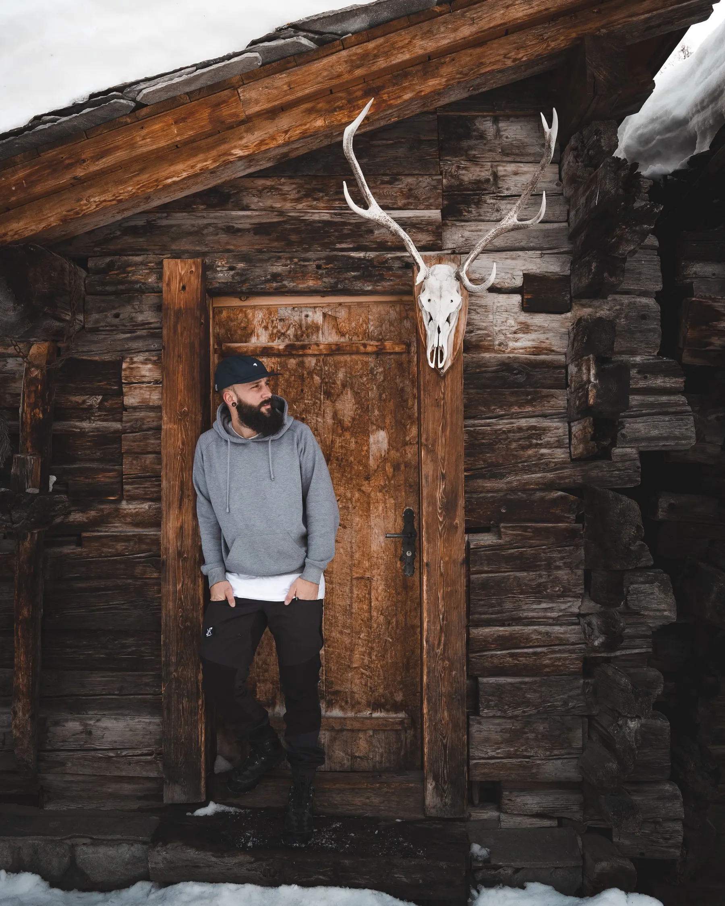

ABANDONED HOUSES, SURREAL LIGHT
A cluster of empty wooden huts above Zermatt that looks lifted out of a film set. Especially eerie in winter.
Walk up from Zermatt village toward Furi station. The old Weiler (hamlet) sits just off the trail, still standing but long since emptied. Dark wood against snow, zero tourists, and a perfect frame of the Matterhorn poking up behind.
Go at late afternoon or on an overcast day. Hard sun blows out the wood texture; soft light makes the timber glow. Fifteen minutes on foot from town, so easy to combine with a coffee after.